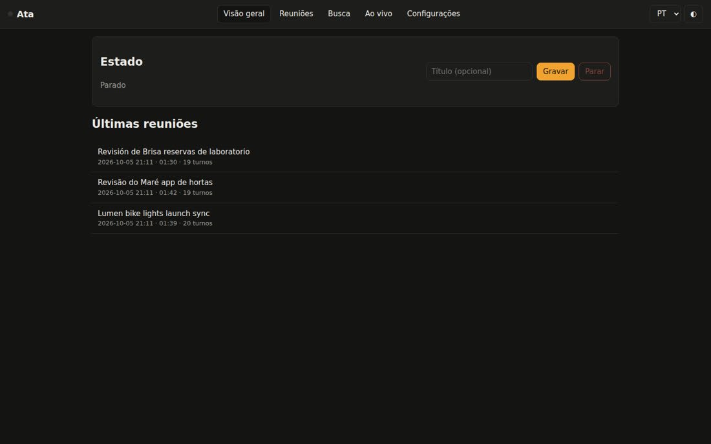
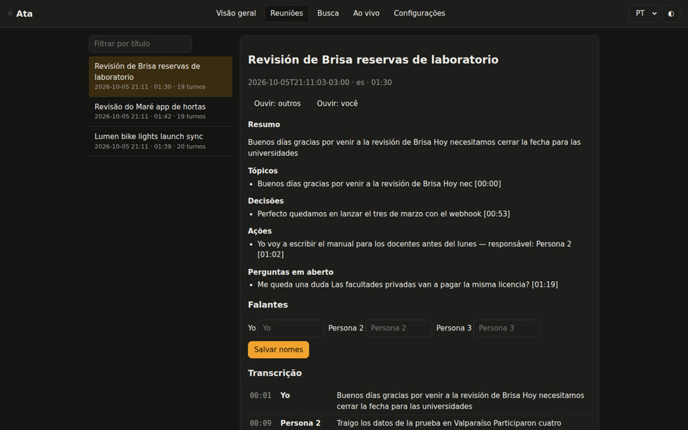
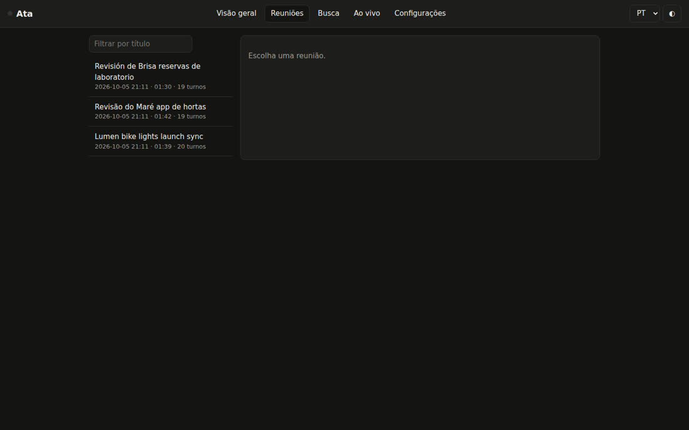
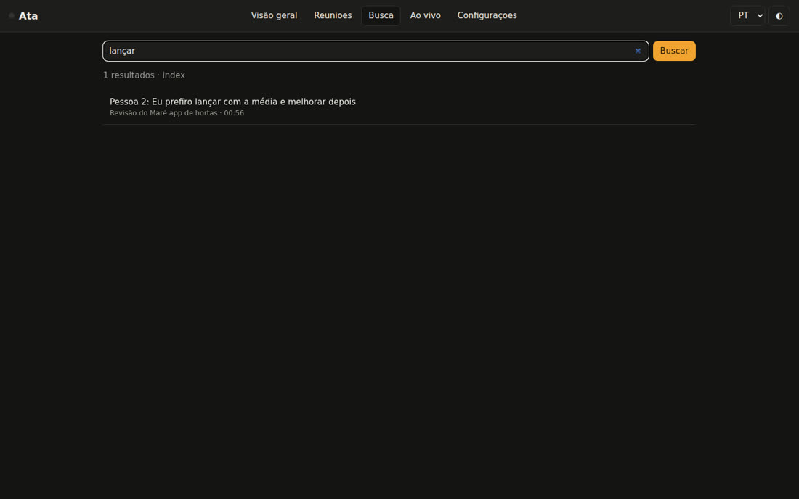
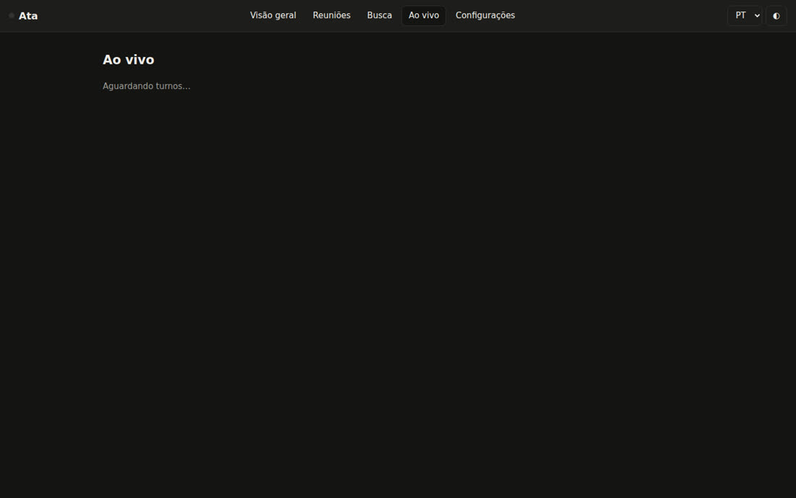
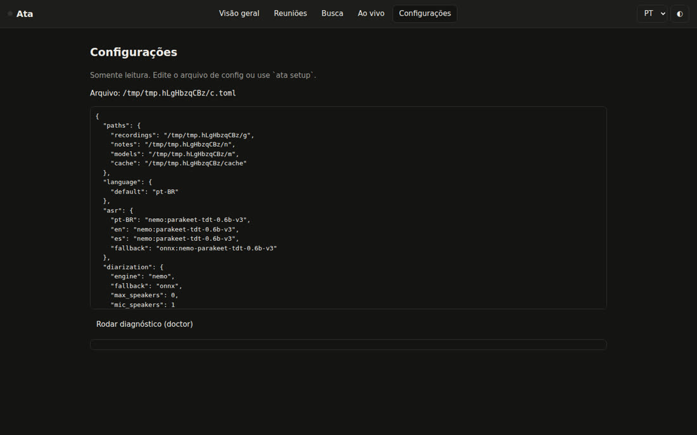

O Ata grava a call em duas faixas (o que você ouve e o que você fala), transcreve na sua máquina com GPU ou CPU e entrega a nota com cada fala por pessoa, resumo, decisões e ações. Sem bot na call, sem conta, sem API paga.
Projeto aberto do INEMA (MIT), inspirado nas ideias do CrunchLog, de Christian Landsteiner. É uma implementação independente: nenhuma linha de código dele foi usada. A diferença está em português, inglês e espanhol de primeira classe, Linux como plataforma principal, uso da GPU, resumo local e modo ao vivo sem serviço pago.
A saída de som (Meet, Zoom, Teams) e o microfone são gravados separados. Tudo o que vem do microfone é "Eu"; o gate tira o eco da caixa de som e a separação de falantes só atua do outro lado.
Motor, limpeza de vícios de fala ("né", "tipo"; "um", "uh"; "este", "o sea"), nota, resumo, demo e preparação mudam com o idioma da reunião. Rótulos: Eu / Pessoa 2, Me / Speaker 2, Yo / Persona 2.
Transcrição (NeMo-Speech.cpp na GPU ou onnx na CPU), resumo (Ollama), busca e modo ao vivo rodam na sua máquina. Claude ou Codex pela assinatura são opcionais e só recebem texto, nunca áudio.
Cada reunião vira uma pasta (o bundle ata/1) com far.wav, mic.wav e meta.json. Tudo o que vem depois (palavras, falas, resumo, nota, índice) é derivado e pode ser refeito.
Linux: PipeWire (pw-record, com alinhamento das faixas pelo eco). Windows: WASAPI loopback. macOS 14.2+: helper Swift com process tap (código-fonte incluído).
Principal: NeMo-Speech.cpp (Parakeet v3, Nemotron 3.5 streaming e Nemotron 3 Diarization; CUDA no DGX Spark/GB10, Metal no Mac). Reserva: onnx-asr + sherpa-onnx na CPU. Se o principal falhar, cai na reserva e registra isso na nota.
Gravações do CrunchLog (bundle_version: 2) são lidas e processadas como cópia, sem tocar no original. Serve para migrar e para comparar resultados.
Python 3.12 vem pelo uv. Para resumo local, o Ollama; para a gravação no Linux, o PipeWire.
Gerenciador de Python da Astral.
# Linux / macOS curl -LsSf https://astral.sh/uv/install.sh | sh # Windows (PowerShell) powershell -c "irm https://astral.sh/uv/install.ps1 | iex"
O padrão é qwen3.6:35b-a3b; dá para trocar no config.toml.
ollama pull qwen3.6:35b-a3b ollama pull qwen3-embedding:0.6b
ffmpeg (importar mp3/mp4), Piper (voz do demo), Claude Code ou Codex logados (resumo pela assinatura).
which pw-record ffmpeg piper claude codexComandos reais do Ata 0.1.0.
Os extras trazem o MCP, o modo ao vivo e o motor de CPU. Use ".[all]" para tudo, inclusive a captura no Windows.
git clone https://github.com/inematds/ata && cd ata uv tool install --python 3.12 ".[mcp,live,onnx]" ata --version # ata 0.1.0
Idioma padrão, pastas e quem faz o resumo. Escolher claude ou codex liga o nível de privacidade 1 e avisa que o texto sai da máquina.
ata setup --lang pt-BR --summary ollama # pastas padrão: ~/Ata/gravacoes e ~/Ata/notas · config: ~/.config/ata/config.toml
O install detecta o hardware: cuda13 no GB10, metal no Mac, cpu nos demais. O motor roda só em 127.0.0.1 e, no Linux, com teto de memória.
ata engine install --dry-run # mostra o que vai baixar ata engine install --allow-unverified # 0.1.0: hashes ainda não fixados ata engine start ata engine status ata doctor # [ok]/[warn]/[fail] por item; exit 0 = pronto
Uma reunião inventada, com roteiro próprio em cada idioma (3 pessoas, números, uma decisão, duas ações e uma pergunta aberta), passa pelo pipeline real. Com o Piper, as vozes são sintetizadas; com --no-tts, o áudio é sintético e serve para testar sem modelo.
ata demo --lang pt-BR ata demo --lang en --no-tts # note: ~/Ata/notas/2026-10-05-2111-revisao-do-mare-app-de-hortas.md
Ligue ata toggle a uma tecla (GNOME/KDE, PowerToys/AutoHotkey, Atalhos do macOS, Stream Deck). No Linux, outras placas de som: ATA_FAR_TARGET e ATA_MIC_TARGET com o node.name do wpctl status.
ata toggle # começa ata toggle # para e escreve a ata ata start --title "Kickoff Acme" --speakers 3 --lang pt-BR ata status --json
Áudio ou vídeo de qualquer formato (passa pelo ffmpeg) vira uma reunião só com a faixa "far". Gravações do CrunchLog também entram.
ata import entrevista.mp4 --lang es --title "Entrevista Lucía" ata process --dry-run ~/CrunchLog/recordings/2026-10-05-1642-demo # bundle crunchlog/2 lido: 2 tracks, offsets={"far": 0.0, "mic": 0.0}
Dê nomes, reprocesse com o número certo de pessoas, exporte legendas. Suas anotações vão no my-notes.md da pasta da reunião e entram no resumo.
ata speakers latest "Pessoa 2=Ana" "Pessoa 3=Bruno" ata process latest --speakers 4 ata rerender latest ata export latest --format srt # srt|vtt|txt|json|md|csv
O índice SQLite junta busca por palavra (FTS5) e por significado (vetores do Ollama). Cada trecho vem com [reunião, mm:ss].
ata search "data de lançamento" --since 30d ata ask "o que decidimos sobre o lançamento?" # [Revisão do Maré app de hortas, 01:00] Eu: ...ficou definido que lançamos a versão dois no dia 14 de novembro ata actions --owner Ana # ações em aberto entre reuniões ata actions --done <id> # marca como feita (id do --json)
A pauta junta ações em aberto, decisões e perguntas das reuniões com aquele cliente. Os itens (qN) se marcam sozinhos quando a reunião seguinte responde a eles, inclusive ao vivo.
ata prep "acme" --calendar "Qui 14h, Ana e Bruno" # ~/Ata/notas/2026-10-06-acme-preparacao.md
Durante a gravação, transcreve as duas faixas em tempo real pelo Nemotron 3.5 streaming local, grava as falas em live/turns.jsonl e marca a pauta. Nada de serviço pago.
ata start --title "Acme semanal" ata live start ata live tail # mostra as falas chegando
Desligado por padrão, porque voz é dado biométrico. Com [voices] enabled = true, cadastre uma voz e o "Pessoa 2" vira "Ana" nas próximas reuniões. Fica só na sua máquina e pode ser apagado.
ata voices enroll Ana latest "Pessoa 2" ata voices list ata voices forget --all
Gravar e parar, ouvir as faixas, transcrição clicável, renomear falantes, busca e modo ao vivo, em PT, EN ou ES. Só escuta em 127.0.0.1; a primeira visita usa o link com o token.
ata dashboard # http://127.0.0.1:47530/
O Ata foi pensado para agentes: o servidor MCP, as skills e o Markdown são interfaces de primeira classe.
ata_status, ata_list, ata_read, ata_search, ata_ask, ata_actions, ata_decisions, ata_prep, ata_person, ata_record_start/stop/toggle, ata_process, ata_job, ata_rename_speakers, ata_export, ata_reindex, ata_doctor, ata_action_done.
claude mcp add --scope user ata -- ata mcpCada reunião vira fontes/AAAA-MM-DD-slug.md (tipo fonte, subtipo reunião) e as decisões entram em decisoes/registro.md. Arquivos que você editou nunca são sobrescritos.
ata connect cerebro --dir ~/meu-cerebro ata connect obsidian --vault ~/Obsidian
Cinco skills para Claude Code e Codex: meeting-notes, action-items, meeting-prep, ask-meetings, meeting-to-wiki. O plugin está em .claude-plugin/. Agentic OS de Jack Roberts também é suportado (opcional).
ata connect agentic-os --dry-runCapturas da versão 0.1.0 com as três reuniões de demonstração (pt-BR, en, es).






Transparência sobre a versão 0.1.0.